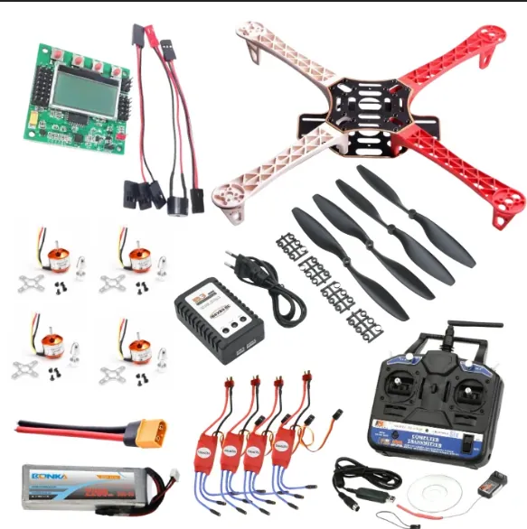

Home / Problems We Solve / Costly crashes while learning
TrainingDrone pilot training without crashing your mission aircraft
New operators need hours in the air, but mission-grade aircraft are not the place to make beginner mistakes.
Defence units, government departments and new drone teams.
Crashes in training cost money and take mission aircraft out of service.
A rugged training drone that uses the same ground station as operations.
What should new drone pilots train on?
Skilled operators decide how much value any drone delivers. But when mission aircraft are the only ones available, every training flight risks a costly loss and takes a platform out of service.
New pilots make mistakes, and that is how they learn. On a mission-grade aircraft, each mistake is expensive and takes the aircraft out of service.
A training drone is built to survive learning. Because it can be flown with the same ground station used in operations, skills carry over when pilots move up.
Who faces this problem
Defence and police units
New operators need many flying hours before going on a mission.
Training institutes
Students will make mistakes, so aircraft must be repairable.
Maintenance teams
Technicians learn by taking an aircraft apart and repairing it.
Signs you have this problem
- Mission aircraft are being used for beginner practice
- Crashes are costing money and availability
- Pilots avoid practising because they fear damage
- Maintenance crews have no aircraft to learn on
What to look for
- Rugged, low-cost training airframes
- Beginner-friendly flight modes with safety limits
- The same ground station as your operations
- Structured exercises for pilots and maintainers
The main causes
Cost
Each crash on a mission aircraft is expensive to repair or replace.
Availability
Aircraft used for training are not available for operations.
Confidence
Fear of breaking equipment limits the practice people need.
Before and after
How to solve it, step by step
- 1
Learn
Start with beginner-friendly modes and safety limits.
- 2
Practise
Work through structured exercises.
- 3
Maintain
Train maintainers on the same platform.
- 4
Move up
Progress to operational systems.
Common mistakes
- Training new pilots on your most expensive aircraft
- Practising only in calm weather and open space
- Teaching flying but not emergency procedures
- Having no way of tracking each pilot’s progress
Questions to ask a supplier
- How easily can the aircraft be repaired after a crash?
- Does it share a ground station with our mission aircraft?
- Are spares available locally?
- What structured exercises are included?
What to use
Common questions
Which Decouvertes drone is for training?
Vision 1.0, a 1.8 kg carbon-fibre quadcopter, is built for defence applications and drone-pilot training.
Do drone pilots in India need a licence?
Rules depend on the drone and how it is used. Check the current DGCA Drone Rules for certification and registration requirements.
Can you train maintenance crews too?
Yes. Our training capability includes structured exercises for pilots and maintainers.
How long does drone pilot training take?
It depends on the aircraft, the mission and the rules that apply. Plan for regular practice after the first course, because skills fade without it.
What should be covered besides flying?
Pre-flight checks, emergency procedures, battery care, airspace rules, mission planning and basic maintenance.
Related problems
Relying on imported drones
When spares, support and design decisions sit overseas, a grounded drone can stay grounded.
Read this guideNo standard drone fits your mission
Off-the-shelf drones are built for common needs, so unusual payloads, ranges and conditions can leave you stuck.
Read this guideBuying drones for government
Government buyers must follow procurement rules and also find a drone that meets the actual mission.
Read this guideFacing this problem?
Tell us about your mission and our engineers will suggest the right platform or configuration.